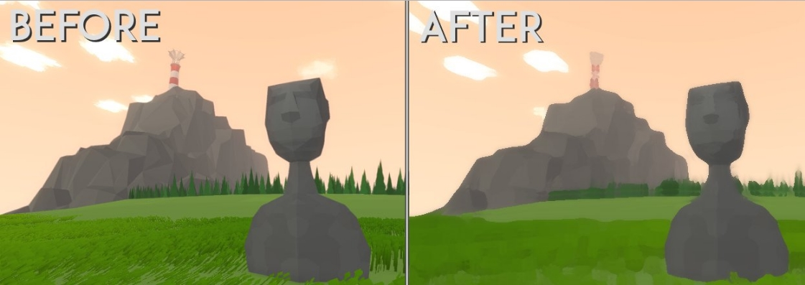

An open-world 2D platformer where jumping is a resource. I made Retrostasis in 72 hours for Gamejolt's GDC jam. Everything but the music was done by me, the music was done by SYNC. Retrostasis won fourth place out of 128 games, and I got to show it at Gamejolt's booth at GDC 2016. I also made a timelapse of the whole jam.
Engine: Unity
Platforms: Windows, Mac, Linux
Binaural infinite runner set to the music of Proleter. I originally made ZERO over the course of a few months in 2014, but I revisited and revised it in 2016.
A walking simulator about growing up. The currently playable build is just a prototype that I made over the course of a few days. Planning to release a full, better version of the game late in 2016 or early in 2017.
Engine: Unity
Platforms: Windows, Mac, Linux
A gravity-based puzzle game made in 48 hours for Ludum Dare 26, based on the theme "minimalism".
Engine: Unity
Platforms: Windows, Mac, Linux (WebGL/Unity browser game)
Twin stick shooter tower defense game I made in XNA (now monogame). I made this game when I was 14, YOU HAVE BEEN WARNED.
Engine: XNA Framework (Now Monogame)
Platforms: Windows
A short narrative game where you find important objects that link together different scenes which piece together a story. Made in two weeks for Adventure Jam 2016 by Josh O'Caoimh and me. I did the programming, Josh did the art, and we collaborated on everything else. It was written about on Alpha Beta Gamer, PCGamer, and RockPaperShotgun.
"For a game that was created in just 2 weeks, Torpor boasts an exciting and rich gameplay experience that will leave the player questioning how the events connect to one another..." - Alpha Beta GamerEngine: Unity
Platforms: Windows, Mac, Linux
A game where you catch nuts that fall from the sky. Made in one night for a gamejam put on by the Gamecraft club at the University of Utah.
As lead programmer, I worked with and organized a team of 6 other programmers, many of whom had little Unity experience. I also worked closely with the producer, artists, and audio engineers to ensure that everyone was always on the same page. We started brainstorming for the game at 7p.m., had a functioning prototype at midnight, and finished the game around two in the morning.
A 2D Platformer where the player eats to grow, and vomits to shrink. Made in 48 hours with the help of Daniel Sitnick. Daniel did the art, I did the code, and everything else was collaboration. Bitey got third place in BaconGameJam 7.
I joined a team of two to work on a procedurally generated action platformer in 48 hours. I was tasked with programming the level generator. My solution was to use the "Spelunky" method of designing a bunch of rooms in a text editor, and then writing a C# script in Unity to string them together in a way that created a snake-like path to the level's exit. Based on this post.
Engine: Unity
Platforms: Windows, Mac, Linux (WebGL/Unity browser game)
As part of a not-yet-released project, I wrote a postproccess shader in cg that makes a scene look painted. The effect is achieved with an implementation of the Kuwahara filter.
EXAMPLES 